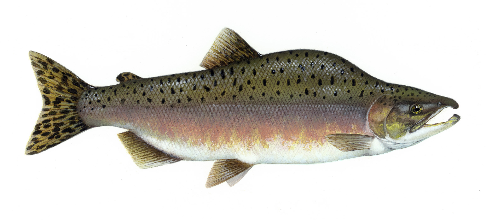

Salmon

Ingredients:
- Salmon filet
- Minced Garlic
- Honey
- Apple cider vinegar or lemon juice.
- Salt and pepper.
Steps:
- First, season the salmon fillets with salt, pepper and cayenne pepper.
- Make the honey garlic sauce by mixing the ingredients together.
- Heating up a skillet or pan and cook the salmon with garlic and the sauce.
- Add an extra step of broiling the salmon fillets in the oven.